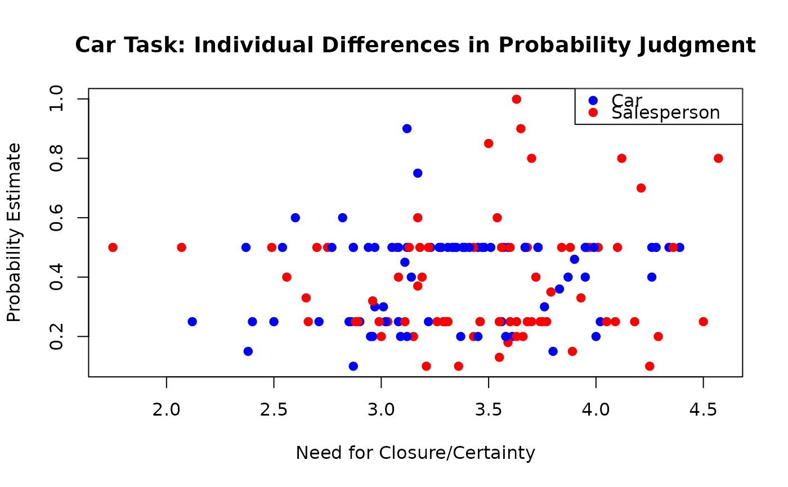
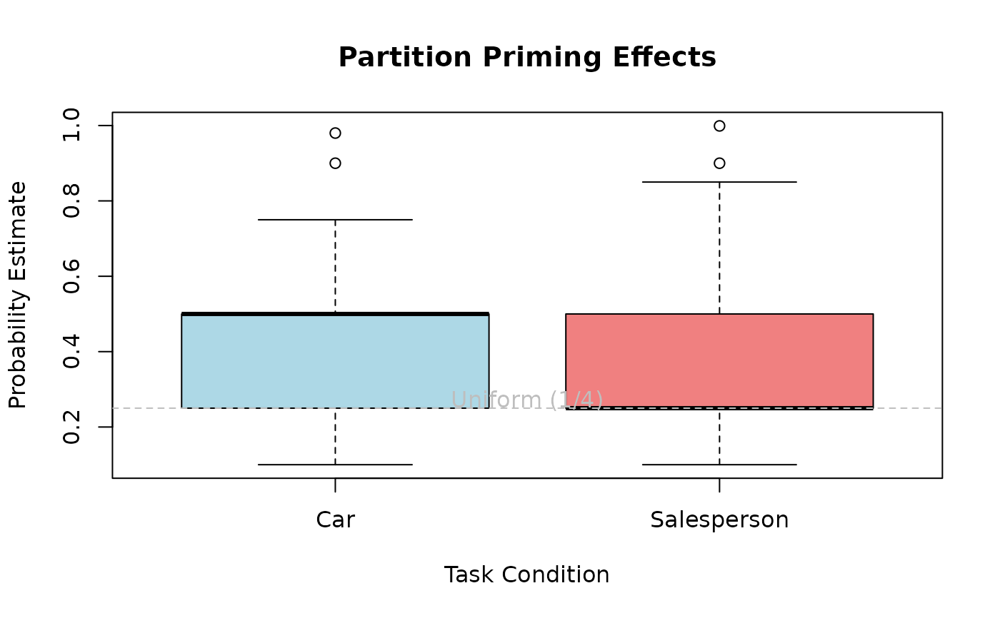

Partition-Primed Probability Judgement Task for Car Dealership
Source:R/gkwreg-datasets.R
CarTask.RdData from a cognitive experiment examining how partition priming affects probability judgments in a car dealership context. Participants judged probabilities under different framing conditions.
Format
A data frame with 155 observations on 3 variables:
- probability
numeric. Estimated probability (response variable).
- task
factor with levels
CarandSalespersonindicating the condition/question type.- NFCCscale
numeric. Combined score from the Need for Closure (NFC) and Need for Certainty (NCC) scales, which are strongly correlated.
Details
All participants in the study were undergraduate students at The Australian National University, some of whom obtained course credit in first-year Psychology for their participation.
Task questions:
Car condition: "What is the probability that a customer trades in a coupe?"
Salesperson condition: "What is the probability that a customer buys a car from Carlos?" (out of four possible salespersons)
The key manipulation is the implicit partition: In the Car condition, there are multiple car types (binary: coupe vs. not coupe), while in the Salesperson condition, there are four specific salespersons. Classical findings suggest that different partition structures lead to different probability estimates even when the actual probabilities are equivalent.
The NFCC scale (Need for Closure and Certainty) measures individual differences in tolerance for ambiguity. Higher scores indicate greater need for definitive answers and discomfort with uncertainty.
References
Smithson, M., Merkle, E.C., and Verkuilen, J. (2011). Beta Regression Finite Mixture Models of Polarization and Priming. Journal of Educational and Behavioral Statistics, 36(6), 804–831. doi:10.3102/1076998610396893
Smithson, M., and Segale, C. (2009). Partition Priming in Judgments of Imprecise Probabilities. Journal of Statistical Theory and Practice, 3(1), 169–181.
Examples
# \donttest{
require(gkwreg)
require(gkwdist)
#> Loading required package: gkwdist
data(CarTask)
# Example 1: Task effects on probability judgments
# Do people judge probabilities differently for car vs. salesperson?
fit_kw <- gkwreg(
probability ~ task,
data = CarTask,
family = "kw"
)
summary(fit_kw)
#>
#> Generalized Kumaraswamy Regression Model Summary
#>
#> Family: kw
#>
#> Call:
#> gkwreg(formula = probability ~ task, data = CarTask, family = "kw")
#>
#> Residuals:
#> Min Q1.25% Median Mean Q3.75% Max
#> -0.3274 -0.1604 -0.0233 -0.0182 0.0726 0.6057
#>
#> Coefficients:
#> Estimate Std. Error z value Pr(>|z|)
#> alpha:(Intercept) 0.59548 0.09165 6.498 8.16e-11 ***
#> alpha:taskSalesperson -0.11015 0.10146 -1.086 0.278
#> beta:(Intercept) 1.09659 0.12178 9.004 < 2e-16 ***
#> ---
#> Signif. codes: 0 ‘***’ 0.001 ‘**’ 0.01 ‘*’ 0.05 ‘.’ 0.1 ‘ ’ 1
#>
#> Confidence intervals (95%):
#> 3% 98%
#> alpha:(Intercept) 0.4159 0.7751
#> alpha:taskSalesperson -0.3090 0.0887
#> beta:(Intercept) 0.8579 1.3353
#>
#> Link functions:
#> alpha: log
#> beta: log
#>
#> Fitted parameter means:
#> alpha: 1.72
#> beta: 2.991
#> gamma: 1
#> delta: 0
#> lambda: 1
#>
#> Model fit statistics:
#> Number of observations: 155
#> Number of parameters: 3
#> Residual degrees of freedom: 152
#> Log-likelihood: 34.76
#> AIC: -63.52
#> BIC: -54.39
#> RMSE: 0.1812
#> Efron's R2: -0.002858
#> Mean Absolute Error: 0.1485
#>
#> Convergence status: Successful
#> Iterations: 14
#>
# Interpretation:
# - Alpha: Task type affects mean probability estimate
# Salesperson condition (1/4 = 0.25) vs. car type (unclear baseline)
# Example 2: Individual differences model
# Need for Closure/Certainty may moderate probability judgments
fit_kw_nfcc <- gkwreg(
probability ~ task * NFCCscale |
task,
data = CarTask,
family = "kw"
)
summary(fit_kw_nfcc)
#>
#> Generalized Kumaraswamy Regression Model Summary
#>
#> Family: kw
#>
#> Call:
#> gkwreg(formula = probability ~ task * NFCCscale | task, data = CarTask,
#> family = "kw")
#>
#> Residuals:
#> Min Q1.25% Median Mean Q3.75% Max
#> -0.3059 -0.1553 -0.0094 -0.0183 0.0915 0.5954
#>
#> Coefficients:
#> Estimate Std. Error z value Pr(>|z|)
#> alpha:(Intercept) 0.0106 0.4239 0.025 0.9801
#> alpha:taskSalesperson 0.4263 0.7016 0.608 0.5434
#> alpha:NFCCscale 0.2272 0.1232 1.845 0.0651 .
#> alpha:taskSalesperson:NFCCscale -0.2456 0.2011 -1.221 0.2220
#> beta:(Intercept) 1.4714 0.1864 7.892 2.97e-15 ***
#> beta:taskSalesperson -0.6039 0.2487 -2.428 0.0152 *
#> ---
#> Signif. codes: 0 ‘***’ 0.001 ‘**’ 0.01 ‘*’ 0.05 ‘.’ 0.1 ‘ ’ 1
#>
#> Confidence intervals (95%):
#> 3% 98%
#> alpha:(Intercept) -0.8202 0.8414
#> alpha:taskSalesperson -0.9489 1.8015
#> alpha:NFCCscale -0.0142 0.4687
#> alpha:taskSalesperson:NFCCscale -0.6397 0.1486
#> beta:(Intercept) 1.1060 1.8368
#> beta:taskSalesperson -1.0915 -0.1164
#>
#> Link functions:
#> alpha: log
#> beta: log
#>
#> Fitted parameter means:
#> alpha: 1.815
#> beta: 3.373
#> gamma: 1
#> delta: 0
#> lambda: 1
#>
#> Model fit statistics:
#> Number of observations: 155
#> Number of parameters: 6
#> Residual degrees of freedom: 149
#> Log-likelihood: 38.98
#> AIC: -65.96
#> BIC: -47.7
#> RMSE: 0.1795
#> Efron's R2: 0.01639
#> Mean Absolute Error: 0.1467
#>
#> Convergence status: Successful
#> Iterations: 21
#>
# Interpretation:
# - Interaction: NFCC may have different effects depending on task
# People high in need for certainty may respond differently to
# explicit partitions (4 salespersons) vs. implicit partitions (car types)
# - Beta: Precision varies by task type
# Example 3: Exponentiated Kumaraswamy for extreme estimates
# Some participants may give very extreme probability estimates
fit_ekw <- gkwreg(
probability ~ task * NFCCscale | # alpha
task | # beta
task, # lambda: extremity differs by task
data = CarTask,
family = "ekw"
)
#> using C++ compiler: ‘g++ (Ubuntu 13.3.0-6ubuntu2~24.04) 13.3.0’
#> Warning: NaNs produced
summary(fit_ekw)
#>
#> Generalized Kumaraswamy Regression Model Summary
#>
#> Family: ekw
#>
#> Call:
#> gkwreg(formula = probability ~ task * NFCCscale | task | task,
#> data = CarTask, family = "ekw")
#>
#> Residuals:
#> Min Q1.25% Median Mean Q3.75% Max
#> -0.2927 0.1036 0.1499 0.1947 0.3299 0.9989
#>
#> Coefficients:
#> Estimate Std. Error z value Pr(>|z|)
#> alpha:(Intercept) -14.59427 0.36201 -40.315 < 2e-16 ***
#> alpha:taskSalesperson -11.81563 0.53713 -21.998 < 2e-16 ***
#> alpha:NFCCscale 0.22010 0.08734 2.520 0.0117 *
#> alpha:taskSalesperson:NFCCscale -0.31692 0.16846 -1.881 0.0599 .
#> beta:(Intercept) 0.85723 0.02072 41.381 < 2e-16 ***
#> beta:taskSalesperson -0.12052 0.02288 -5.267 1.39e-07 ***
#> lambda:(Intercept) 32.63595 NaN NaN NaN
#> lambda:taskSalesperson 23.05168 NaN NaN NaN
#> ---
#> Signif. codes: 0 ‘***’ 0.001 ‘**’ 0.01 ‘*’ 0.05 ‘.’ 0.1 ‘ ’ 1
#>
#> Confidence intervals (95%):
#> 3% 98%
#> alpha:(Intercept) -15.3038 -13.8848
#> alpha:taskSalesperson -12.8684 -10.7629
#> alpha:NFCCscale 0.0489 0.3913
#> alpha:taskSalesperson:NFCCscale -0.6471 0.0133
#> beta:(Intercept) 0.8166 0.8978
#> beta:taskSalesperson -0.1654 -0.0757
#> lambda:(Intercept) NaN NaN
#> lambda:taskSalesperson NaN NaN
#>
#> Link functions:
#> alpha: log
#> beta: log
#> lambda: log
#>
#> Fitted parameter means:
#> alpha: 4.848e-07
#> beta: 2.224
#> gamma: 1
#> delta: 0
#> lambda: 7.595e+23
#>
#> Model fit statistics:
#> Number of observations: 155
#> Number of parameters: 8
#> Residual degrees of freedom: 147
#> Log-likelihood: 149.7
#> AIC: -283.4
#> BIC: -259
#> RMSE: 0.3211
#> Efron's R2: -2.148
#> Mean Absolute Error: 0.2569
#>
#> Convergence status: Failed
#> Iterations: 57
#>
# Interpretation:
# - Lambda varies by task: Salesperson condition (explicit partition)
# may produce more extreme estimates (closer to 0 or 1)
# Visualization: Probability by task and NFCC
plot(probability ~ NFCCscale,
data = CarTask,
col = c("blue", "red")[task], pch = 19,
xlab = "Need for Closure/Certainty", ylab = "Probability Estimate",
main = "Car Task: Individual Differences in Probability Judgment"
)
legend("topright",
legend = levels(CarTask$task),
col = c("blue", "red"), pch = 19
)

# Distribution comparison
boxplot(probability ~ task,
data = CarTask,
xlab = "Task Condition", ylab = "Probability Estimate",
main = "Partition Priming Effects",
col = c("lightblue", "lightcoral")
)
abline(h = 0.25, lty = 2, col = "gray")
text(1.5, 0.27, "Uniform (1/4)", col = "gray")

# }